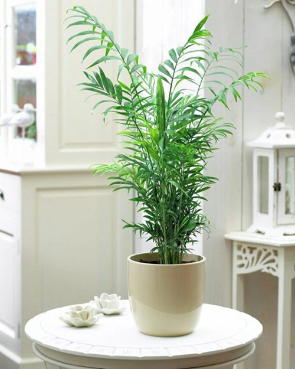

Практически все домашние растения у нас появились из дальних стран. И к каждому из них требуется индивидуальный подход. Одному нужно солнце, а другое может погибнуть от его воздействия и предпочитает тень. Некоторым необходима обильная влага, а есть те, про которые надо забывать. И чтобы растение радовало цветовода своим видом, надо знать правила, требуемые к уходу. Рассмотрим каталог популярных комнатных цветов.
Эта статья – настоящий справочник для любителей комнатных растений, ведь в ней собраны не только описания основных групп и видов цветов, но и приведена информация о самых популярных растениях для дома.
Содержание статьи:
